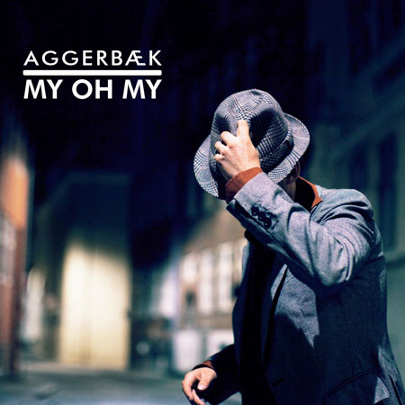

News
That was it. Now we head further north to New York and Boston. The
meeting in Austin, Texas' Capital, was of the same caliber as when I
hit any real big city. I'll get spellbound. I'll get surprised. I get
scared. AND then I smile. I quickly also get nostalgic because the
journey is not permanent. The moment is flighty. Suddenly the ending
arrives and the journey continues. It's a big part of the journey. The
End. It is also the beginning of everything.
What happened actually in Austin? I grew & was enriched by Austin!
Because I met some genuine people. I met the american people behind
"The House Of Songs", Troy & Nathan. I grew because I met the people
behind "The Sessions": CJ & Lauren and the wacky and wonderful
songwriter Danny Malone & filmmaker woman: Holly Bronko ... I
co-wrote with some beautiful songwriters and The Sessions made 2 music
videos of new songs which will be used for my upcoming 2011 album. I
grew because I found myself among people who make me grow - the same I
do in New York and I also see very clearly on the distance that I do
the same in Copenhagen! I surround myself with people who make me
grow! It is really important to realize that basically it's your own
choice - to put yourself in the midst of people who make each other
grow!
Now I have spent a week to compose on in peace and tranquility in
Boston, with some of the most beautiful winter weather I've ever seen.
New York awaits with 8 concerts the next 14 days and a fine Danish
songwriter Jens Jepsen comes over and plays these gigs with me ...
Yes, this is the trip - another conclusion arrives - and yet a new
beginning is just in front of me all the time...
Love & Good Karma
|